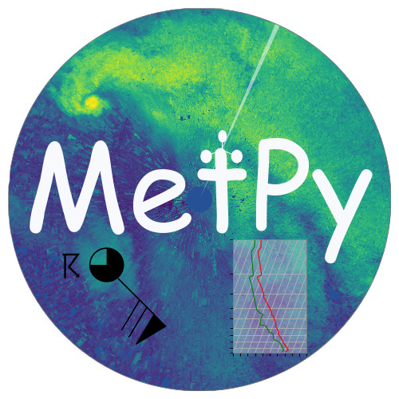
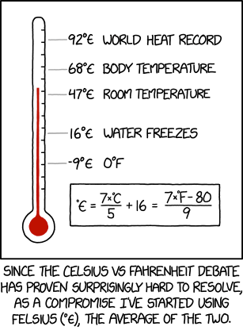
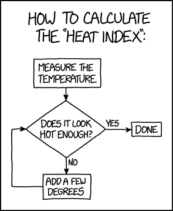

Cross Sections in MetPy
(with xarray...and xkcd)
Unidata Summer Internship 2018
Jon Thielen (with Ryan May and John Leeman)
Working on MetPy
- Started contributing in Nov 17'
- Applied in Jan 18'
- Started internship in May

Initial Plans
Another Plan: Cross Sections...

...with xarray!
import xarray as xr
data = xr.open_dataset('irma_gfs_example.nc')
print(data)
<xarray.Dataset>
Dimensions: (isobaric1: 21, isobaric3: 31, latitude: 81, longitude: 131, time1: 9)
Coordinates:
* time1 (time1) datetime64[ns] 2017-09-05T12:00:00 ...
reftime datetime64[ns] ...
* latitude (latitude) float32 50.0 49.5 49.0 ...
* isobaric3 (isobaric3) float64 100.0 200.0 ...
* isobaric1 (isobaric1) float64 1e+04 1.5e+04 ...
* longitude (longitude) float32 250.0 250.5 ...
Data variables:
Vertical_velocity_pressure_isobaric (time1, isobaric1, latitude, longitude) float32 ...
Relative_humidity_isobaric (time1, isobaric3, latitude, longitude) float32 ...
Temperature_isobaric (time1, isobaric3, latitude, longitude) float32 ...
u-component_of_wind_isobaric (time1, isobaric3, latitude, longitude) float32 ...
v-component_of_wind_isobaric (time1, isobaric3, latitude, longitude) float32 ...
Geopotential_height_isobaric (time1, isobaric3, latitude, longitude) float32 ...
LatLon_361X720-0p25S-180p00E int32 ...
Attributes:
Originating_or_generating_Center: ...
Originating_or_generating_Subcenter: ...
GRIB_table_version: ...
Type_of_generating_process: ...
Analysis_or_forecast_generating_process_identifier_defined_by_originating...
Conventions: ...
history: ...
featureType: ...
History: ...
geospatial_lat_min: ...
geospatial_lat_max: ...
geospatial_lon_min: ...
geospatial_lon_max: ...
heights = data['Geopotential_height_isobaric']
heights.sel(time1='2017-09-06T00:00Z',
isobaric3=50000.)
<xarray.DataArray 'Geopotential_height_isobaric' (latitude: 81, longitude: 131)>
array([[5880.9595, 5878.8394, 5876.5195, ..., 5807.9194, 5809.3594, 5810.679 ],
[5884.5596, 5882.3994, 5879.9194, ..., 5821.2393, 5822.7593, 5824.119 ],
[5888.4395, 5885.7993, 5883.2393, ..., 5833.3193, 5834.8794, 5836.2793],
...,
[5871.679 , 5871.719 , 5871.5996, ..., 5894.8394, 5894.5596, 5894.5195],
[5871.2393, 5871.159 , 5871.159 , ..., 5892.8794, 5893.159 , 5893.159 ],
[5870.5195, 5871.119 , 5870.7993, ..., 5891.119 , 5891.7993, 5891.8794]],
dtype=float32)
Coordinates:
time1 datetime64[ns] 2017-09-06
reftime datetime64[ns] ...
* latitude (latitude) float32 50.0 49.5 49.0 48.5 48.0 47.5 47.0 46.5 ...
isobaric3 float64 5e+04
* longitude (longitude) float32 250.0 250.5 251.0 251.5 252.0 252.5 253.0 ...
Attributes:
long_name: Geopotential height @ Isobaric surface
units: gpm
Grib_Variable_Id: VAR_0-3-5_L100
Grib2_Parameter: [0 3 5]
Grib2_Parameter_Discipline: Meteorological products
Grib2_Parameter_Category: Mass
Grib2_Parameter_Name: Geopotential height
Grib2_Level_Type: 100
Grib2_Level_Desc: Isobaric surface
Grib2_Generating_Process_Type: Forecast
grid_mapping: LatLon_361X720-0p25S-180p00E
data['Temperature_isobaric'].mean(
('time1', 'latitude', 'longitude'))
<xarray.DataArray 'Temperature_isobaric' (isobaric3: 31)>
array([259.4611 , 255.66313, 248.79195, 240.33334, 235.54622, 231.1286 ,
223.24205, 218.46536, 213.04253, 208.66364, 204.48088, 209.77391,
219.08775, 229.3075 , 238.7891 , 247.04654, 253.94908, 259.74255,
264.77377, 269.32214, 273.50998, 277.24646, 280.57074, 283.58157,
286.40454, 289.0842 , 291.59814, 292.82648, 294.26868, 295.83304,
297.45053], dtype=float32)
Coordinates:
reftime datetime64[ns] ...
* isobaric3 (isobaric3) float64 100.0 200.0 300.0 500.0 700.0 1e+03 2e+03 ...
(data['Temperature_isobaric'] -
data['Temperature_isobaric'].mean(
('time1', 'latitude', 'longitude')))
<xarray.DataArray 'Temperature_isobaric' (time1: 9, isobaric3: 31, latitude: 81, longitude: 131)>
array([[[[ -1.46109 , ..., -1.161102],
...,
[ 1.738922, ..., -1.161102]],
...,
[[ -7.250519, ..., -10.750519],
...,
[ 1.749481, ..., 1.849457]]],
...,
[[[ -1.661102, ..., -2.861084],
...,
[ 3.03891 , ..., -0.261078]],
...,
[[ -4.150543, ..., -10.450531],
...,
[ 1.949463, ..., 1.949463]]]], dtype=float32)
Coordinates:
* time1 (time1) datetime64[ns] 2017-09-05T12:00:00 ...
reftime datetime64[ns] 2017-09-05T12:00:00
* latitude (latitude) float32 50.0 49.5 49.0 48.5 48.0 47.5 47.0 46.5 ...
* isobaric3 (isobaric3) float64 100.0 200.0 300.0 500.0 700.0 1e+03 2e+03 ...
* longitude (longitude) float32 250.0 250.5 251.0 251.5 252.0 252.5 253.0 ...
.png)
Units
Meteorological Calculations
But what about cross sections?
With that out of the way...
Cross sections!
Live Demo Time!